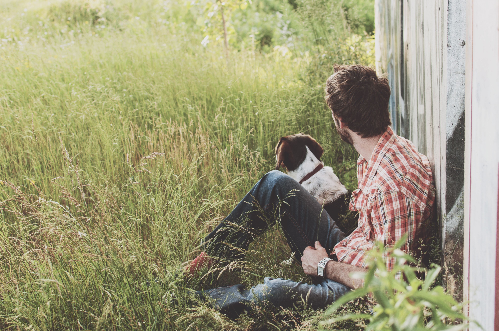

Future 3.0

Née d’un mouvement citoyen apolitique, cette initiative demande simplement à pouvoir se nourrir et consommer sans conséquences négatives pour la santé.
Autonomie alimentaire
Aujourd’hui, le savoir-faire permet une autonomie alimentaire sans pesticide; plus rien ne justifie leur usage. Ils sont devenus inutiles, chers, dangereux et néfastes pour l’homme et l’environnement.
Agriculture durable
Par l’interdiction de l’usage et de l’importation des pesticides sur le territoire Suisse, nous créons les conditions-cadres nécessaires pour disposer d’une agriculture durable et respectueuse de la santé publique.
Réorienter les enjeux
Aucun commerce ne prévaut sur la santé, réorientons les enjeux économiques en les recentrant sur l’humain et l’environnement.